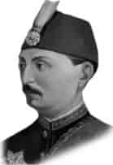

V. MURAT
Annesi : Şevk Efzâ Kadın Efendi
Doğumu : 21 Eylül 1840
Vefatı : 29 Ağustos 1904
Saltanatı : 1876 (93 gün)
V. Murat da İstanbul’da doğdu. Değerli âlimler tarafından yetiştirildi. Şiir ve nesir üzerinde çalışmalar yaptı. Tahta çıktığında otuz beş yaşında idi. Sultan Abdülaziz’i tahttan indirenler onu padişah yaptılar. Tahta çıktığı zaman akli dengesi tamamen bozuldu. Dünyanın en iyi doktorlarına teslim edilmesine rağmen iyileşemedi.
Zamanında Osmanlı tarihinin en büyük cinayeti işlenmiştir. Hüseyin Avni Paşa, Mithat Paşa ve kafadarları, bir başka ihtilâl olur da Sultan Abdülaziz’i tekrar tahta çıkarırlar korkusu ile sultanı hapsettikleri Feriye Sarayı’nda hunharca şehit ettiler. Bu hadiseden on bir gün sonra, Binbaşı Çerkez Hasan Olayı oldu. Bir kabine toplantısında Sultan Abdülaziz’in kayınbiraderi olan Binbaşı Hasan Bey, Hüseyin Avni’yi, Hariciye Nazırı Raşit Paşa’yı ve bir de subayı öldürdü. Böylece Hüseyin Avni’den eniştesinin intikamını almış oldu. Devlet bu devrede Rüştü Paşa tarafından idare edilmekteydi. Bu sırada ise devletin en büyük felâketi olan Osmanlı-Rus Harbi başlamak üzereydi. V. Murat, Abdülaziz ile beraber Avrupa seyahatine çıkmış ve bilhassa Fransa’yı yakından tanır hale gelmişti. Mükemmel bir Fransızca biliyordu. Musiki severdi. Fakat bütün bu meziyetleri tahta çıktığında bir işe yaramadı. Akli dengesi bozulduğu için, devletin ileri gelenleri onu tahttan indirmek mecburiyetinde kaldılar. Hayatının sonuna kadar Çırağan Sarayı’nda oturdu. Bir müddet sonra aklı tamamen düzeldi. Hayatı Çırağan Sarayı’nda geçti. Yine bu sarayda altmış dört yaşında iken vefat etti. Yeni Camii yanındaki türbeye gömüldü.
Erkek çocukları: Mehmet Selahaddin.
Kız çocukları: Fehime, Fatma, Hatice.